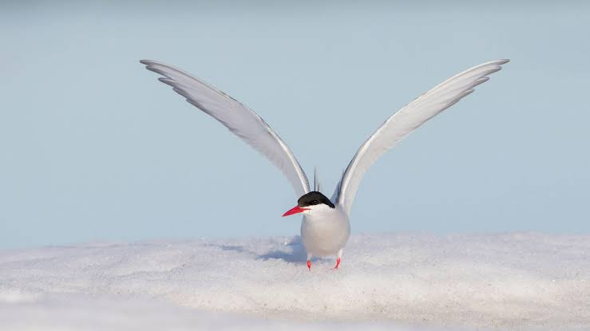

Sternidae
Birds
Terns are seabirds in the family Laridae that have a worldwide distribution and are normally found near the sea, rivers, or wetlands. Terns are treated as a subgroup of the family Laridae which includes gulls and skimmers and consist of eleven genera.
Family: Laridae
Scientific name: Sternidae
Rank: Family
Subfamily: Sterninae
Mass: Common tern: 120 g, Arctic tern: 100 g, Least Tern: 40 g,
Length: Common tern: 37 cm, Sandwich tern: 36 – 46 cm, Forster's tern: 33 – 36 cm, Black noddy: 35 – 40 cm
Tern, any of about 40 species of slender, graceful water birds that constitute the subfamily Sterninae, of the family Laridae, which also includes the gulls. Terns inhabit seacoasts and inland waters and are nearly worldwide in distribution.
The largest number of species is found in the Pacific Ocean. Many terns are long-distance migrants, the most notable being the Arctic tern (Sterna paradisaea).
The Arctic tern breeds in the southerly reaches of the Arctic and winters in Antarctic regions, thus making the longest annual migration of any bird.
Terns range in length from about 20 to 55 cm (8 to 22 inches). Compared with gulls, they are more slender, shorter legged, and longer winged.
They range in colour from white to black and white to almost entirely black. The bill of various species may be black, red, or yellow, while the feet are red or black. Their feet are webbed. Most species have long and pointed wings, forked tails, and sharply pointed bills.
Terns sometimes eat insects, but the bulk of their diet consists of crustaceans and small fish, which they catch by diving through the air and plunging into the water.
Terns are gregarious birds and breed colonially, usually on the ground on islands. Sometimes they form breeding colonies of millions of individuals.
Most species lay two or three eggs, although a few species lay only one egg. In some parts of the world tern eggs are gathered for human consumption.
There are five species of noddy terns, or noddies, belonging to the genus Anous. Noddies, named for their nodding displays, are tropical birds with wedge-shaped or only slightly forked tails.
A distinct type of tern, the Inca tern (Larosterna inca), of Peru and northern Chile, bears distinctive white plumes on the side of the head.
The most typical terns are the approximately 30 species of the genus Sterna, with forked tail, black cap or crest, and pale body. The black tern, S.
nigra (sometimes Chlidonias niger), about 25 cm (10 inches) long, with a black head and underparts (white below in winter) and gray wings and back, breeds in temperate Eurasia and North America and winters in tropical Africa and South America.
It is called a marsh tern because it nests inland on freshwater marshes and around lakes. The common tern (S. hirundo) is about 35 cm (14 inches) long and has a black cap, red legs, and a red bill with a black tip.
It breeds throughout northern temperate regions and winters on southern coasts. The least, or little, tern (S. albifrons), under 25 cm (10 inches) long, is the smallest tern.
It breeds on sandy coasts and river sandbars in temperate to tropical regions worldwide except South America. The sooty tern (S. fuscata), about 40 cm (16 inches) long, has a white forehead and is otherwise black above and white below. It breeds in huge, noisy colonies on oceanic islands in warm regions.
Biology of Sternidae
Distribution and habitat
Terns have a worldwide distribution, breeding on all continents including Antarctica. The northernmost and southernmost breeders are the Arctic tern and Antarctic tern respectively.
Many terns breeding in temperate zones are long-distance migrants, and the Arctic tern probably sees more annual daylight than any other animal as it migrates from its northern breeding grounds to Antarctic waters, a return journey of more than 30,000 km (19,000 mi).
A common tern that hatched in Sweden and was found dead five months later on Stewart Island, New Zealand, must have flown at least 25,000 km (16,000 mi).
Actual flight distances are, of course, much greater than the shortest possible route. Arctic terns from Greenland were shown by radio geolocation to average 70,000 km (43,000 mi) on their annual migrations.
Breeding
Terns are normally monogamous, although trios or female-female pairings have been observed in at least three species. Most terns breed annually and at the same time of year, but some tropical species may nest at intervals shorter than 12 months or asynchronously.
Most terns become sexually mature when aged three, although some small species may breed in their second year. Some large sea terns, including the sooty and bridled terns, are four or older when they first breed.
Terns normally breed in colonies, and are site-faithful if their habitat is sufficiently stable. A few species nest in small or dispersed groups, but most breed in colonies of up to a few hundred pairs, often alongside other seabirds such as gulls or skimmers.
Large tern species tend to form larger colonies, which in the case of the sooty tern can contain up to two million pairs. Large species nest very close together and sit tightly, making it difficult for aerial predators to land among them.
Smaller species are less closely packed and mob intruders. Peruvian and Damara terns have small dispersed colonies and rely on the cryptic plumage of the eggs and young for protection.
Feeding
Most terns hunt fish by diving, often hovering first, and the particular approach technique used can help to distinguish similar species at a distance.
Sea terns often hunt in association with porpoises or predatory fish, such as bluefish, tuna or bonitos, since these large marine animals drive the prey to the surface.
Sooty terns feed at night as the fish rise to the surface, and are believed to sleep on the wing since they become waterlogged easily. Terns of several species will feed on invertebrates, following the plough or hunting on foot on mudflats.
The marsh terns normally catch insects in the air or pick them off the surface of fresh water. Other species will sometimes use these techniques if the opportunity arises. An individual tern's foraging efficiency increases with its age.
Breeding
Terns are normally monogamous, although trios or female-female pairings have been observed in at least three species. Most terns breed annually and at the same time of year, but some tropical species may nest at intervals shorter than 12 months or asynchronously.